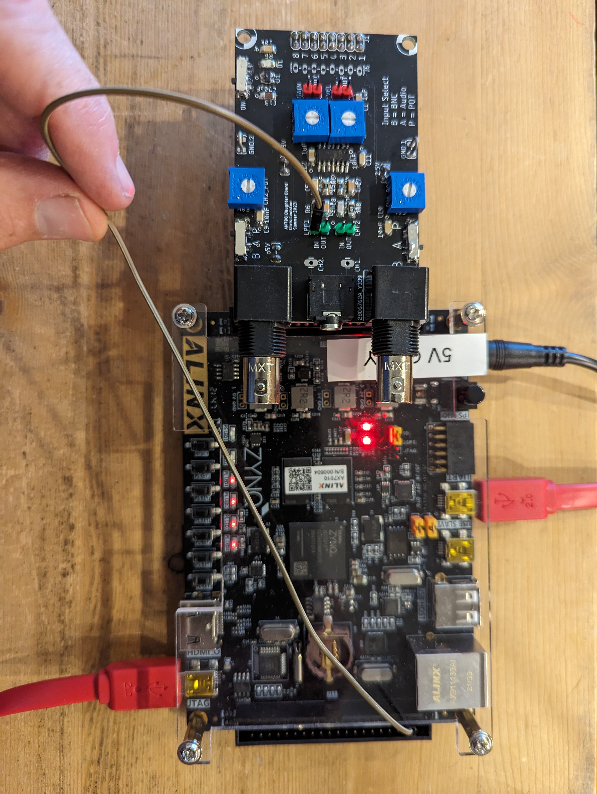
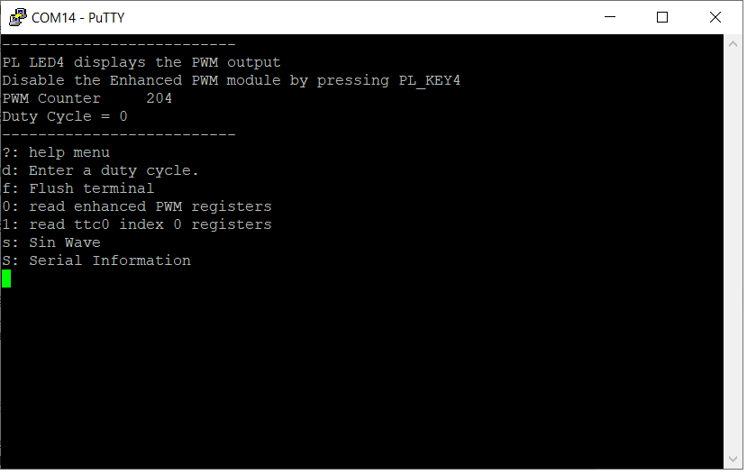
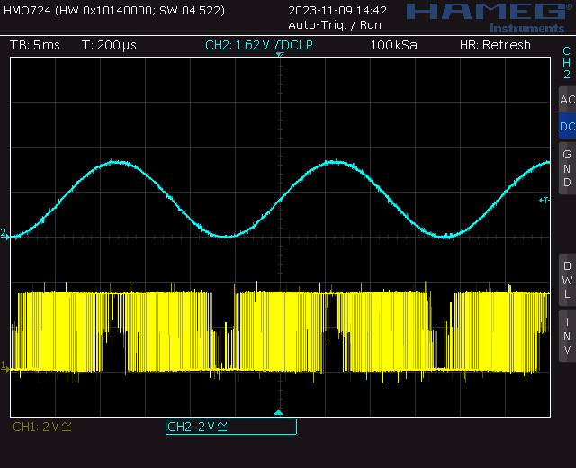

| Lab: | 5 |
Software control of the enhancedPwm hardware
The purpose of this lab is to work through the tool chain to build a stand-alone piece of hardware that interfaces to the Arm Coretex-A9.
Interface enhancedPwm to AXI bus
The first step of this process will be to wrap the enhancedPwm module inside a pair of wrapper files, enhancedPwm_ip_v_0.vhd and enhancedPwm_ip_v_0_S00_AXI.vhd. This process is described in the Build IP document. This file is also available at the top of the main page under the HowTo pull-down.Interface AXI compatible enhancedPwm to ARM A9
The result of the previous step is a IP block that you can place on a block diagram. In this step, you will interface the enhancedPwm IP block to the ARM Coretex-A9 in the block diagram editor. As part of this process, you will configure the ARM-A9, an involved process. When complete you will have the following block diagram.
This process is described in the Interface IP to the Arm-A9 document. This file is also available at the top of the main page under the HowTo pull-down.
Use Vitis to program ARM-A9
The result of the previous step is a wrapper file that you will import into the Vitis development environment. This is a tricky process which is described in the Communicate with IP through the Zynq document. This file is also available at the top of the main page under the HowTo pull-down.Use Interrupts with the ARM-A9
Once you get the previous step working, you are pretty much done. In order to understand the relationship between the TTC interrupt and the ARM-A9, you can read theProgram with the Zynq interrupt document. This file is also available at the top of the main page under the HowTo pull-down. In order to complete this process, you will need some code. You should find this helloworld.c performs all the actions needed to exercise the enhancedPwm and TTC.
Putting it all together
When everything is up and running, connect the output of the PWM channel on J11 pin 3 to one of the low pass filter inputs on the grand-daughter board. You
Connect to the Zynq through the serial port created through the Silicon Labs CP210x chip. The putty terminal should look like the following:

Experiment with the sin wave function to generate a sinwave output from the low pass filter on the grand-daughter boards. When connected to to an oscilloscope, the PWM waveform (bottom) and its low pass filtered output (top) will look like the following.
